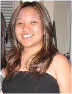
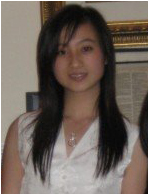
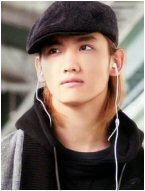
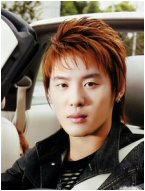
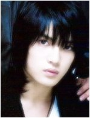

..:: Main ::.
..:: Meet the Team ::.
.:: Our Budget ::.
.:: Hiring ::..
..:: Meet the Team of Cassiopeia Incorporated ::..

NAME = Patty Shin
POSITION = C.E.O of Cassiopeia Incorporated
ABOUT PATTY SHIN =
Patty Shin is the owner as well as the C.E.O of Cassiopeia Incorporated. She looks
over the management and makes sure that the budget has not been exceeded and she is
also responsible for introducing new products as she sees fit. Patty Shin has been
with the company for eighteen long years, since 1989. It had been a desire of hers to
make Miss Kim's dream of expanding and opening new stores all over the country, come
true. Patty's favorite memory in Cassiopeia Incorporated was when she first met
with Miss Jinjoo "Pearl" Kim before she passed away. It was an exciting and inspirational
moment for her.
Email

NAME = Jenny Shen
POSITION = Executive
ABOUT JENNY SHEN =
Jenny Shen has been with Cassiopeia Incorporated since Patty Shin had taken leadership
of the company back in 1989. Though she is an executive, she acts almost as a Vice President
of Cassiopeia Incorporated, working alongside Ms.Shin personally. If there is ever a time
when Ms.Shin is unable to attend a meeting or personally attend to a problem, Jenny Shen
takes over her position temporarily in order to meet these needs. One of her favorite memories
with Cassiopeia is when she and Patty Shin took a roadtrip over to San Francisco from Los Angelos
where they got lost for a couple hours trying to attend a business meeting. It was during that
time that they really bonded.
Email

NAME =Changmin Shim
POSITION =Executive
ABOUT CHANGMIN KIM =
Changmin Shim has been an excellent part of the Cassiopeia Incorporated team. His innovative
mind is always thinking of new ways to help out with the company. Mr.Shim's main job
within the company is to come up with new ways to present and advertise Cassiopeia Incorporated.
He has been employed by Cassiopeia since about the year 2000, about seven years. One of Mr.Shim's favorite
memories is when he first started working for us, and the company had to host a party that was celebrating
the opening of a new "Cassiopeia" store over in New York City. He had a blast at the party, and was able
to meet so many new people.
Email

NAME= Junsu Kim
POSITION = Executive
ABOUT JUNSU KIM =
Junsu Kim has been a part of this company for almost a decade now, and is a
very important part of them team. Mr. Kim's job, as an executive, is the company's overall
accounting and inventory. He makes sure whether to purchase more or less of a merchaindise
depending on how the Cassiopeia stores are doing selling the products. Mr.Kim's favorite
memory relating to Cassiopeia Incorporated was when he and Mr.Jaejoong Kim (below) played
a prank on their fellow executive employee, Changmin Shim, while on one of their work breaks.
It was one of the best pranks he had come up with in years.
Email

NAME= Jaejoong Kim
POSITION = Executive
ABOUT JAEJOONG KIM =
Jaejoong Kim has been with the company for about eight years and was actually personally
recruited by Mr.Junsu Kim. Mr.Kim's main job is watching over the overall management within the
individual stores as well as the Cassiopeia Incorporated company as a whole. He has always had a gift
for time management and organization. Mr.Kim has been known to be pretty strict and firm, yet also fair,
when dealing with the other employees. His favorite memory in Cassiopeia Incorporated was also when he
and Mr.Junsu Kim pranked Mr.Changmin Shim. It had been a prank that they both had been planning for
weeks and are extremely thrilled how it had turned out, though Mr.Changmin Shim was not at all happy about it.
Email